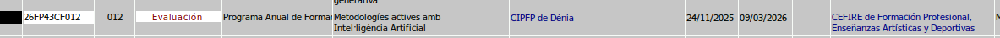
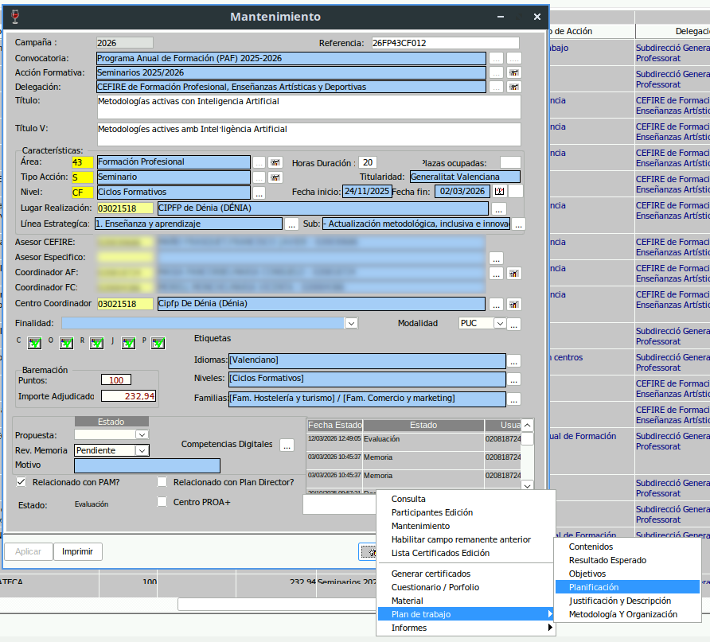
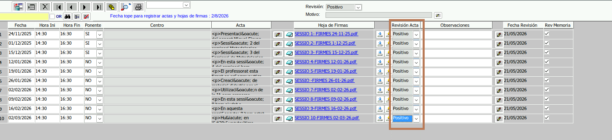
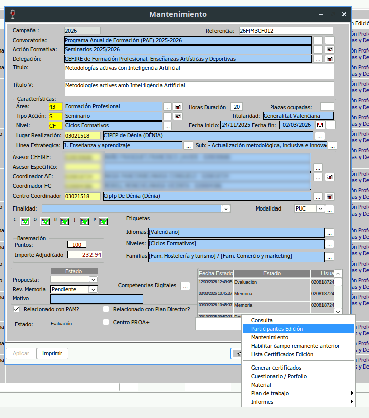
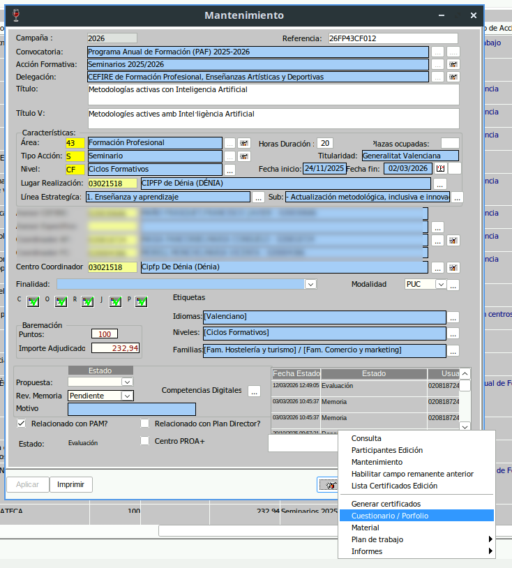
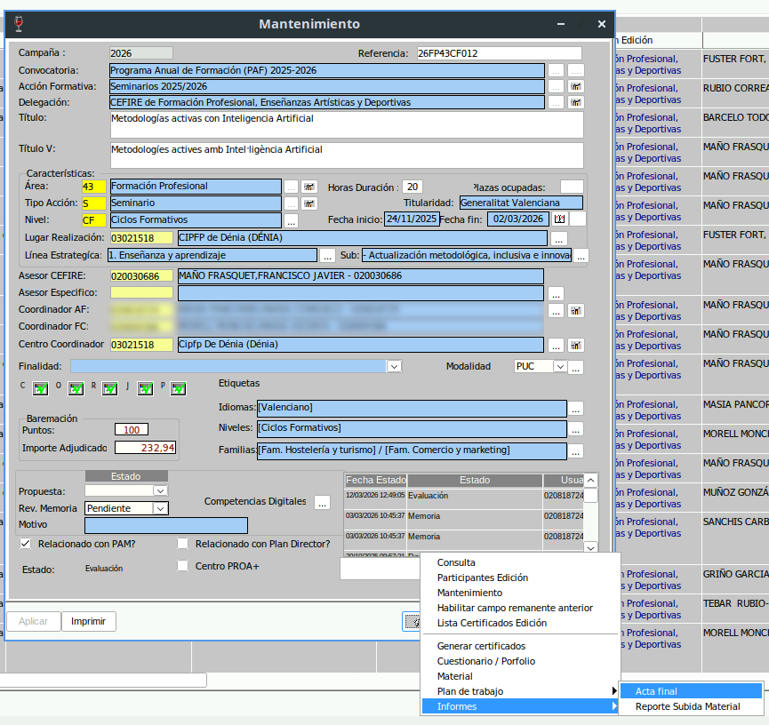
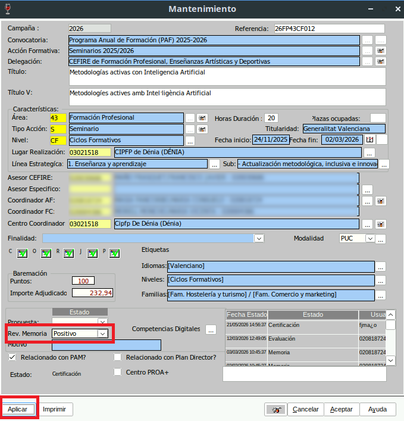
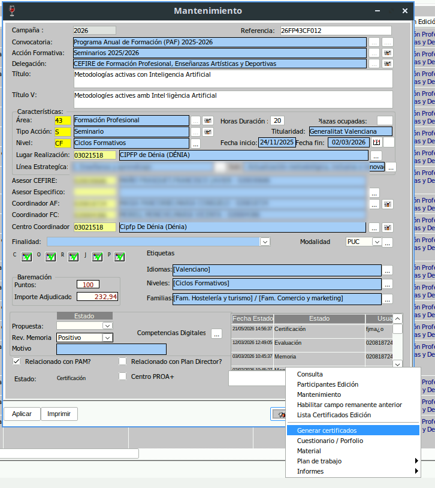
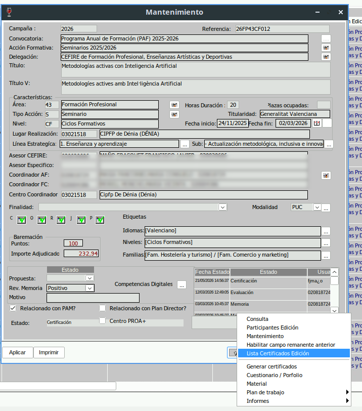
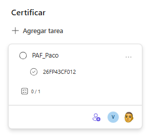

Certificació d'una AF del PAF¶
Aquest tutorial descriu el procediment per a revisar, validar i certificar una acció formativa (AF) del PAF.
Condició prèvia
Per a poder certificar una AF del PAF, la formació ha d'estar en estat Evaluación.

Estat Memoria
Si la formació està en estat Memoria, que és l'estat previ a Evaluación, podem demanar al CAF que ens avise. Així podrem revisar la documentació abans que l'AF avance en el procés de certificació.
1. Comprovar la planificació¶
El primer pas és entrar en l'apartat de Planificación (Extintor/Plan de Trabajo/Planificación) i revisar que tota la documentació de seguiment està correcta.

Cal comprovar:
- Que estan totes les actes de les sessions.
- Que les actes estan correctament emplenades.
- Que estan totes les fulles de signatures.
En les fulles de signatures s'ha de revisar:
- Que la data d'impressió de la fulla és la mateixa que la data en què es va realitzar la sessió de formació.
- Que el CAF ha signat en la part superior de la fulla.
- Quines persones no han signat, per a comprovar que consten com a No aptes i que, per tant, no certificaran.
Una vegada estiga tot revisat, cal posar Positivo en la columna Revisión del Acta y aplicar.

2. Revisar els participants¶
El segon pas és anar a Participantes edición (Extintor/Participantes edición) per a comprovar els participants Aptes i No aptes.

Cal revisar:
- Que les persones que han superat la formació consten com a Apto.
- Que les persones que no han assistit o no compleixen els requisits consten com a No apto.
- Que no queda cap participant amb una qualificació incorrecta.
Si en l'AF hi ha ponent, també cal comprovar:
- Que les hores de la ponència són les correctes.
- Que el títol de la ponència està escrit en valencià i en castellà.
3. Consultar la memòria¶
El tercer pas és consultar la memòria de l'AF (Extintor/Cuestionario-Portfolio).

Quan s'accedeix a aquest apartat, s'obrirà una nova finestra del navegador per a poder revisar el qüestionari.
Cal comprovar:
- Que el qüestionari està totalment emplenat.
- Que no hi ha respostes en blanc.
- Que la informació introduïda és coherent amb el desenvolupament de l'AF.
S'ha de posar especial atenció a les dues últimes qüestions:
- Aspectos que mejorar de la AF
- Aspectos que destacar de la AF
Cal llegir-les per si el CAF ha indicat alguna informació rellevant que s'haja de tindre en compte abans de certificar.
4. Traure i signar l'acta final¶
El quart pas és generar l'acta final de l'AF.

Important
En les AF del PAF no s'han de posar logos en l'acta final.
La nomenclatura de l'arxiu serà:
codiformacio_centre.pdf
Example.-
26FP43CF012_CIPFP Denia.pdf
Una vegada generada l'acta:
- Cal revisar que les dades són correctes.
- Cal signar-la digitalment.
- Cal guardar-la en la carpeta de Teams
5. Validar l'AF i la memòria¶
El quint pas és validar l'AF i la memòria per a fer-ho haurem de canviar la revisió de la memòria de l'AF.
Cal posar Rev.Memoria en Positivo, i aplicar.

6. Generar els certificats¶
El sext pas és generar els certificats de la formació.

Cal seguir aquest procediment:
- Premer Generar certificados.
- Seleccionar els tipus de certificats que vols emetre.
- Seleccionar els participants dels quals vols generar els certificats. Normalment serà tots.
- Generar els certificats.
Certificats pendents
Si algun certificat apareix com a certificado pendiente, no cal fer cap actuació. Gesform executa un script totes les nits que resol aquest problema i genera els certificats pendents.
Quan els certificats estiguen generats, cal comprovar que apareixen correctament en Extintor / Lista certificados edición

7. Solicitar certificació final del director¶
L'últim pas és informar en Kanban que l'AF ja està revisada per a que el director ens certifique l'AF.
Cal crear una targeta dins del dipòsit de CERTIFICAT amb aquesta estructura:
- Títol de la targeta:
PAF_nom_assesor - Tasques de la targeta: codi de l'AF certificada
- Asignar a Alfredo
